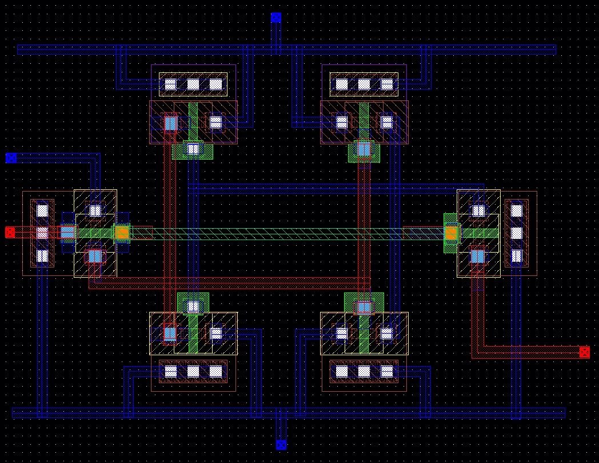
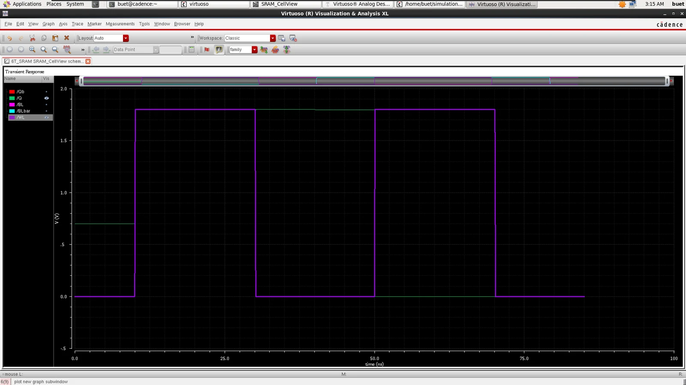
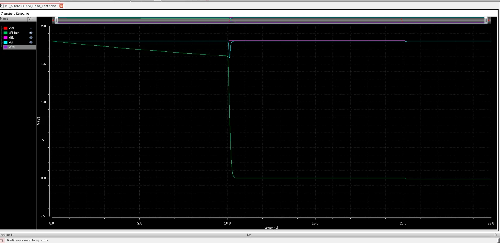
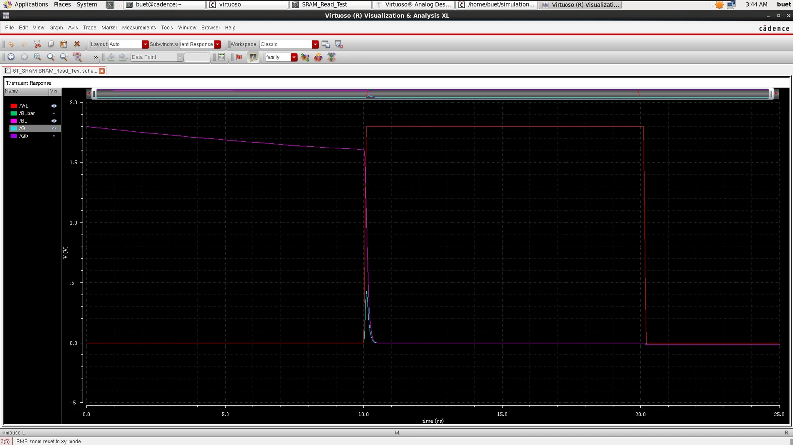
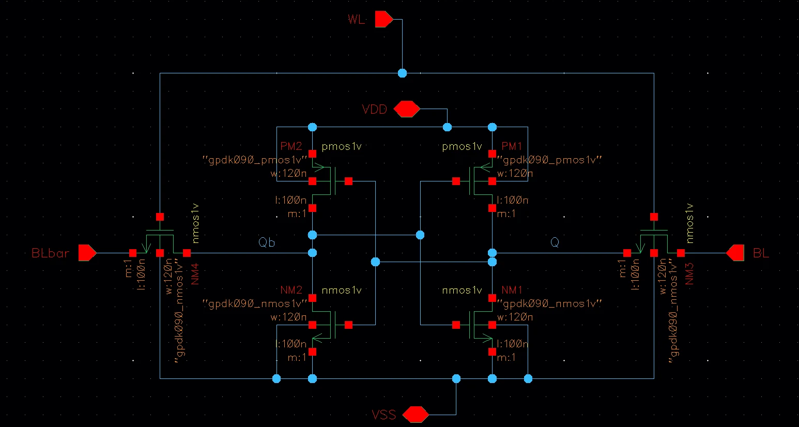
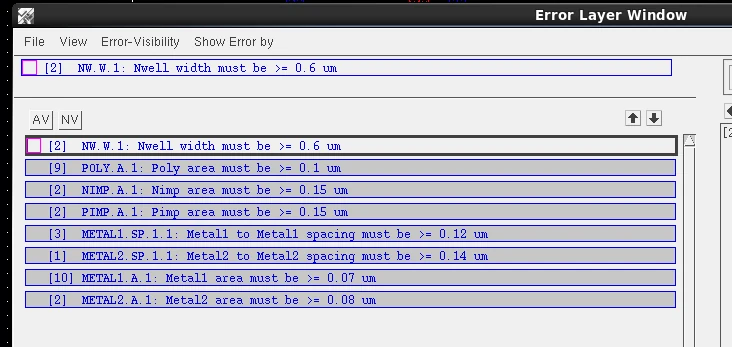
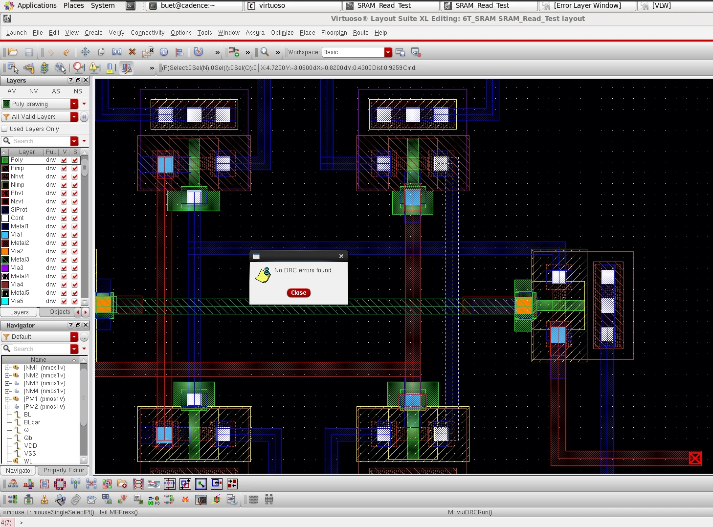
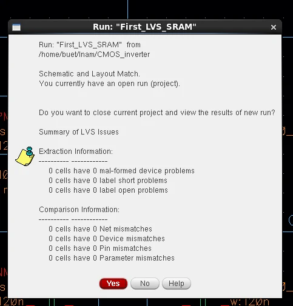
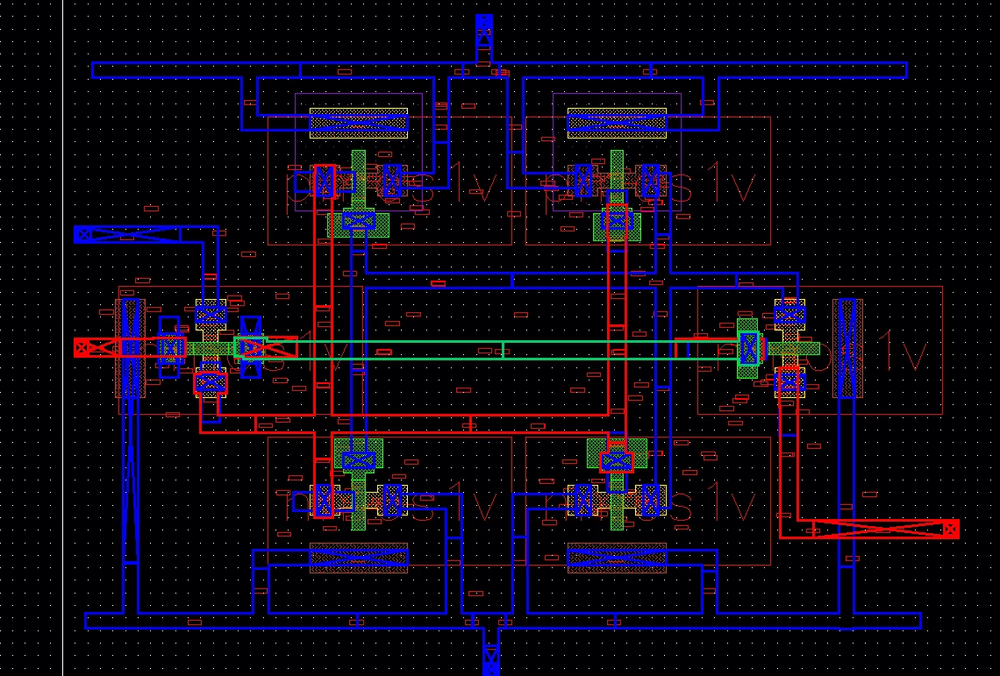

CMOS Memory Design
6T SRAM Cell: Design, Layout, DRC, LVS and RC Extraction
Cadence Virtuoso 6.1.5 · GPDK 90 nm · Spectre/ADE · Assura DRC / LVS / extraction
Two cross-coupled inverters plus two access NMOS, all six devices at W = 120 nm, L = 100 nm. The project covers the full flow: functional transient tests, custom Layout XL layout on Metal1–Metal3, iterative DRC closure, LVS and parasitic extraction.
av_extracted netlist
Functional verification
Write/hold: complementary BL/BLbar pulses with WL pulsed 10/20/40 ns (delay/width/period), 100 ps edges, 85 ns stop. Q follows write-1 then write-0 and holds across bit-line reversals. Read: a separate bench with 10 fF bit-line capacitors and initial conditions standing in for precharge; bit-line differential gives the read data. Simulations use VDD = 1.8 V (see limitations).



Schematic and layout
Layout XL placed the devices from the six-transistor core schematic; supplies and Q run on Metal1, Qb on Metal2 and WL on Metal3 with Via1/Via2 only where nets change layer. Pins are placed on matching routing layers.

DRC closure
The first run flagged minimum-width and minimum-area violations plus M1/M2 spacing. Fixes kept gate poly extensions outside the channel so device dimensions did not change, and enlarged via landing pads (e.g. a 0.14 × 0.14 µm via with enclosures gave 0.072 µm² on Metal1 and 0.08 µm² on Metal2).


LVS and extraction
Assura LVS reports a clean match. RC extraction produced 68 resistors (0.0015–30.07 Ω each) and 224 capacitors (0.00002–0.179 fF each), including inter-net coupling capacitors.


Scope and limitations
- Simulated at VDD = 1.8 V on GPDK090
nmos1v/pmos1vdevices; the supported operating voltage of those models was not independently established. - No numerical static noise margin (hold / read / write SNM) was measured; the DC butterfly-style plot is qualitative.
- No physical precharge circuit or sense amplifier; the read test uses initial conditions.
- Post-layout simulation, timing/power comparison and PVT / Monte Carlo analysis were not performed.